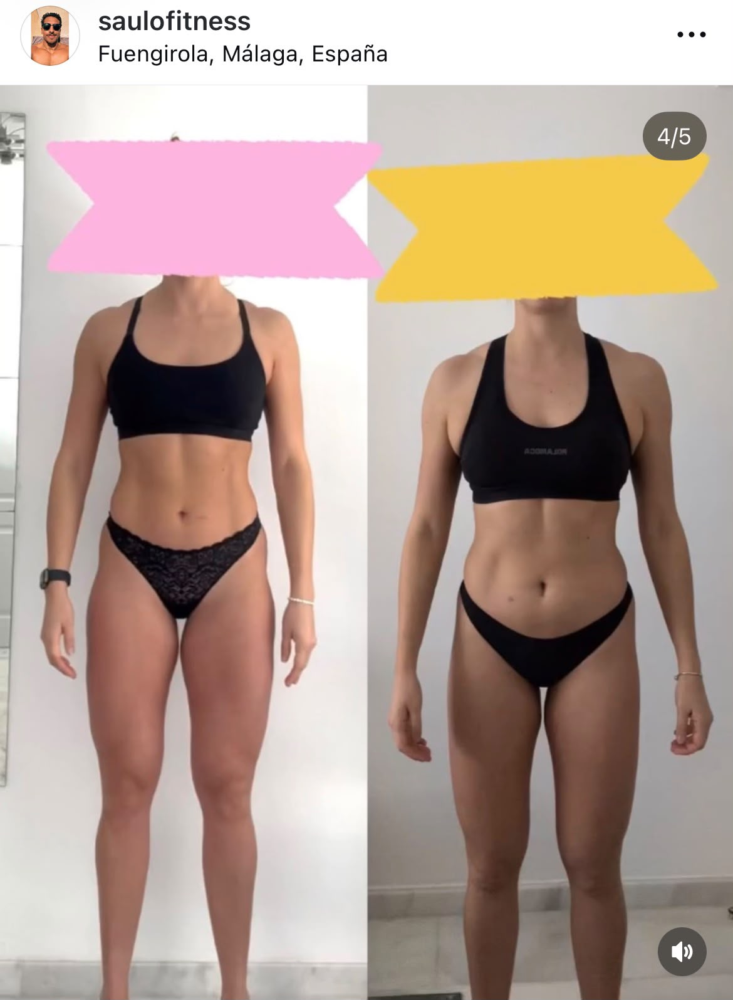
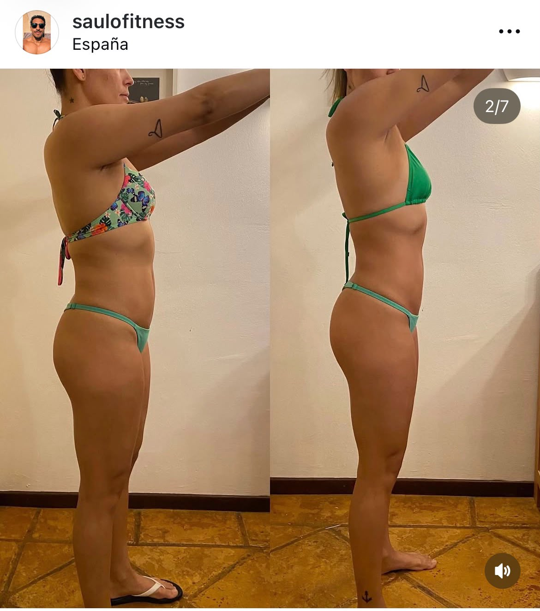

Cada processo parte do seu objetivo, nível e contexto real.
TRANSFORME O SEU FÍSICO COM UM PLANO PERSONALIZADO
Treinamento personalizado · Nutrição · Acompanhamento semanal · Coaching online
Resultados
Mudanças visíveis quando o trabalho é bem estruturado.
A transformação não depende de uma rotina isolada. Depende de uma estrutura sólida, bom acompanhamento e consistência bem conduzida.
Casos reais
Acompanhamento individual
Processo documentado

Caso real 01
Mais massa muscular e presença física
Um processo focado em força, aderência e melhora progressiva da composição corporal.

Caso real 02
Definição, cintura e controle
Treino e hábitos ajustados para alcançar uma mudança visível sem perder uma estrutura sustentável.

Caso real 03
Menos gordura, mais estrutura
Reeducação do treino e do acompanhamento para deixar de improvisar e avançar com uma direção clara.

Caso real 04
Trabalho técnico e forma física
Uma mudança construída com sessões bem planejadas, constância e acompanhamento próximo.
Saulo Fitness
01 / 03
Treinamentos
Rotinas adaptadas ao seu nível, com execução clara e progresso mensurável.
O trabalho é construído com planejamento personalizado, vídeos de apoio, controle de cargas e ajustes de acordo com a sua evolução real.
O QUE INCLUI
- Plano personalizado conforme objetivo e nível.
- Vídeos explicativos dos exercícios.
- Evolução acompanhada e adaptação contínua.
Saulo Fitness
02 / 03
Coaching online
Um serviço profissional exige avaliação, planejamento e acompanhamento.
O acompanhamento é organizado em etapas claras para manter o foco, ajustar o plano no momento certo e sustentar o progresso.

Técnica supervisionada
Você treina com direção, critério e correções
reais.
Saulo Fitness
03 / 03
Eventos
Encontros presenciais para treinar ao vivo, compartilhar energia e reforçar o processo.
A agenda pública reúne convocações concretas, vagas limitadas e uma experiência muito mais intensa para quem quer sair do treino isolado.
Carregando agenda
Como funciona
Um processo claro desde o primeiro contato.
A entrada no programa é organizada de forma simples para começar com ordem e manter o acompanhamento desde o início.
Você pede informação
Compartilha o objetivo e resolvemos as primeiras dúvidas.
É feita a avaliação
Seu ponto de partida é revisto antes de estruturar o trabalho.
Você recebe o plano
Definimos a rotina, a estrutura e o modelo de acompanhamento.
Começa o acompanhamento
O processo segue com revisão, ajustes e contato direto.
Histórias reais
Processos diferentes, a mesma forma de trabalhar.
Mudanças visíveis quando treino, nutrição e acompanhamento deixam de caminhar separados.
Cada evolução é trabalhada com estrutura, ajustes semanais e uma comunicação clara para sustentar o processo.
Fecho
Se você quer treinar com uma estrutura séria, esta é a conversa certa para começar.
Conte-me o seu objetivo e avaliamos como estruturar um processo pessoal, realista e bem conduzido.